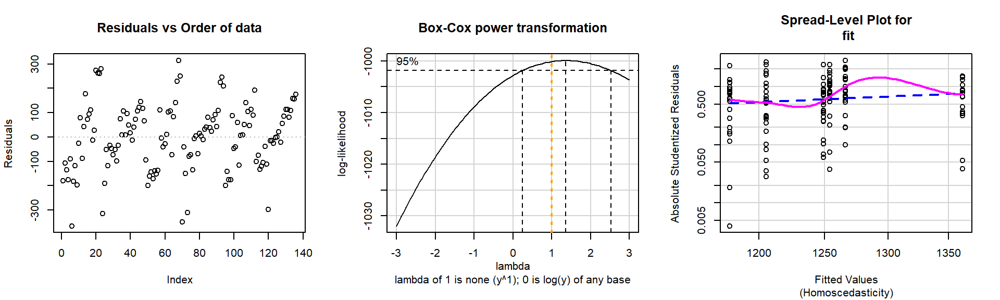
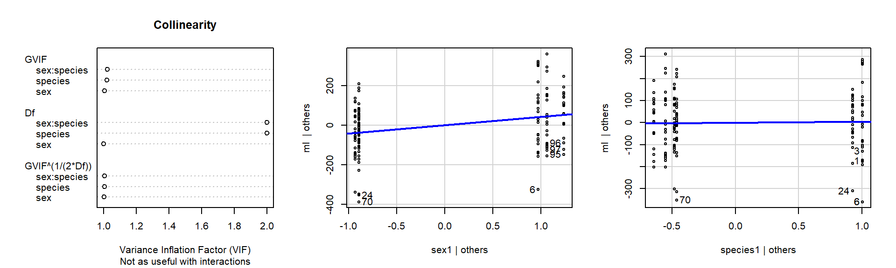
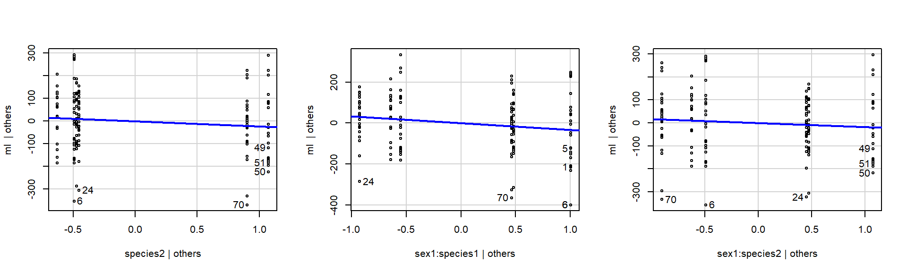
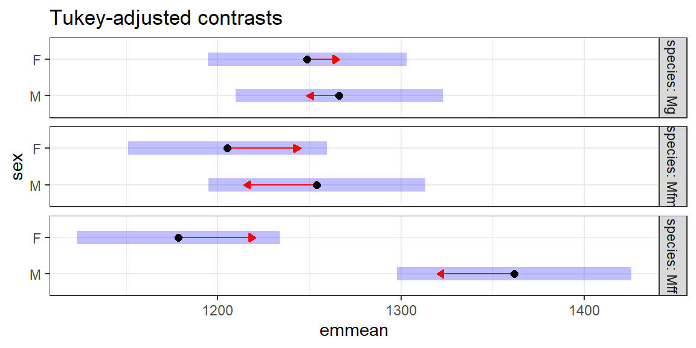
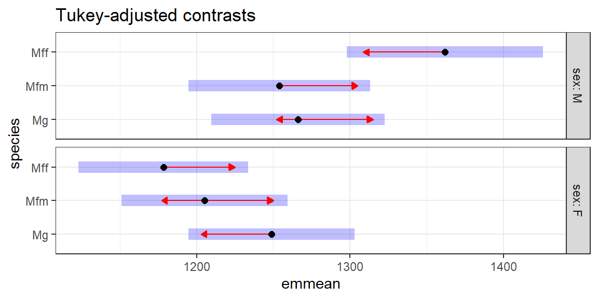

ADA2: Class 10, Ch 05b Paired Experiments and Randomized Block Experiments: Two-way Factor design
[Advanced Data Analysis 2](https://StatAcumen.com/teach/ada12, Stat 428/528, Spring 2023, Prof. Erik Erhardt, UNM
Author
Sina Mokhtar
Published
February 20, 2023
Kangaroos skull measurements: mandible length
What effect does sex and species have on the mandible length of a kangaroo skull?
The data to be analyzed here are selected skull measurements on 148 kangaroos of known sex and species. There are 11 columns of data, corresponding to the following features. The measurements are in meters/10000 (mm/10).
column
Variable name
Description
1 *
sex
sex (1=M, 2=F)
2 *
species
species (0=M. giganteus, 1=M.f. melanops, 2=M.f. fuliginosus)
3
pow
post orbit width
4
rw
rostal width
5
sopd
supra-occipital - paroccipital depth
6
cw
crest width
7
ifl
incisive foramina length
8 *
ml
mandible length
9
mw
mandible width
10
md
mandible depth
11
arh
ascending ramus height
Some of the observations in the data set are missing (not available). These are represented by a period ., which in the read_csv() function is specified by the na = "." option.
# First, download the data to your computer,# save in the same folder as this Rmd file.dat_kang <-read_csv("ADA2_CL_09_kang.csv" , na =c("", ".") ) %>%# subset only our columns of interestselect( sex, species, ml ) %>%# make dose a factor variable and label the levelsmutate(sex =factor(sex , labels =c("M","F")) , species =factor(species, labels =c("Mg", "Mfm", "Mff")) )
Rows: 148 Columns: 11
── Column specification ────────────────────────────────────────────────────────
Delimiter: ","
dbl (11): sex, species, pow, rw, sopd, cw, ifl, ml, mw, md, arh
ℹ Use `spec()` to retrieve the full column specification for this data.
ℹ Specify the column types or set `show_col_types = FALSE` to quiet this message.
Removed 148 - 136 = 12 observations with missing values.
# The first few observationshead(dat_kang)
# A tibble: 6 × 3
sex species ml
<fct> <fct> <dbl>
1 M Mg 1086
2 M Mg 1158
3 M Mg 1131
4 M Mg 1090
5 M Mg 1175
6 M Mg 901
(1 p) Interpret plots of the data, distributional centers and shapes
The side-by-side boxplots of the data compare the mandible lengths across the 6 combinations of sex and species. Comment on the distributional shapes and compare the typical mandible lengths across groups.
# Calculate the cell means for each (sex, species) combination# Group meanskang_mean <- dat_kang %>% dplyr::summarise(m =mean(ml))kang_mean_x <- dat_kang %>%group_by(sex) %>% dplyr::summarise(m =mean(ml)) %>%ungroup()kang_mean_s <- dat_kang %>%group_by(species) %>% dplyr::summarise(m =mean(ml)) %>%ungroup()kang_mean_xs <- dat_kang %>%group_by(sex, species) %>% dplyr::summarise(m =mean(ml)) %>%ungroup()
`summarise()` has grouped output by 'sex'. You can override using the `.groups`
argument.
kang_mean
# A tibble: 1 × 1
m
<dbl>
1 1247.
kang_mean_x
# A tibble: 2 × 2
sex m
<fct> <dbl>
1 M 1290.
2 F 1211.
kang_mean_s
# A tibble: 3 × 2
species m
<fct> <dbl>
1 Mg 1257.
2 Mfm 1228.
3 Mff 1257.
kang_mean_xs
# A tibble: 6 × 3
sex species m
<fct> <fct> <dbl>
1 M Mg 1266.
2 M Mfm 1254.
3 M Mff 1362.
4 F Mg 1249.
5 F Mfm 1205.
6 F Mff 1178.
he First plot: The distribution between groups in terms of spread is not very different and we have roughly a symmetric distribution for all groups and roughly same variance. There is a big difference in ml size between male and female in MFF group, but there is not a big different between between two sex in MG and MFM group. It seems there is an interaction between sex and in mff species group.
(1 p) Do the plots above suggest there is an interaction?
Do the lines for each group seem to be very different from parallel?
Solution
[answer]
yes it seems there is an interaction between sex and in mff species group.
Fit the two-way interaction model
Solution
[answer]
lm_ml_x_s_xs <-lm( ml ~ sex + species + sex:species , data = dat_kang , contrasts =list(sex = contr.sum, species = contr.sum) )
(1 p) Check model assumptions for full model
Recall that we assume that the full model is correct before we perform model reduction by backward selection.
Non-constant Variance Score Test
Variance formula: ~ fitted.values
Chisquare = 0.08179149, Df = 1, p = 0.77488
there are higher-order terms (interactions) in this model
consider setting type = 'predictor'; see ?vif

Warning in e_plot_lm_diagostics(lm_ml_x_s_xs): Note: Collinearity plot
unreliable for predictors that also have interactions in the model.


The residuals are roughly distributed normal based on QQplot. there are no significant outlier. the distribution of data in male group is wider in compare to female but the this difference is not big. There is not enough evidence that we can tell variance is not constant between all groups. based on box-cox plot we do not need transformation. in residuals vs index we can see an structure, because the data have been sorted by sex and species so this is not interpretable. the assumptions are met.
(3 p) ANOVA table, test for interaction and main effects
Test for the presence of interaction between sex and species. Also test for the presence of main effects, effects due to the sex and species.
Solution
[answer]
library(car)
Loading required package: carData
Attaching package: 'car'
The following object is masked from 'package:purrr':
some
The following object is masked from 'package:dplyr':
recode
Anova(lm_ml_x_s_xs, type=3)
Anova Table (Type III tests)
Response: ml
Sum Sq Df F value Pr(>F)
(Intercept) 210457347 1 11207.3465 < 2.2e-16 ***
sex 232267 1 12.3688 0.0006019 ***
species 37881 2 1.0086 0.3675604
sex:species 167853 2 4.4693 0.0132688 *
Residuals 2441207 130
---
Signif. codes: 0 '***' 0.001 '**' 0.01 '*' 0.05 '.' 0.1 ' ' 1
The interaction between sex and species is significant based on 95% confidence Interval.
(1 p) Reduce to final model, test assumptions
If the model can be simplified (because interaction is not significant), then refit the model with only the main effects. Test whether the main effects are significant, reduce further if sensible. Test model assumptions of your final model.
Solution
[answer] The full model is final model because the interaction is significant and the assumptions are met.
(2 p) Summarize the differences
Summarize differences, if any, in sexes and species using relevant multiple comparisons. Give clear interpretations of any significant effects.
This code is here to get you started. Determine which comparisons you plan to make and modify the appropriate code. Make the code chunk active by moving the {R} to the end of the initial code chunk line.
{R}
library(emmeans)
# Contrasts to perform pairwise comparisons
cont_kang <- emmeans(lm_object, specs = "sex")
cont_kang <- emmeans(lm_object, specs = "species")
cont_kang <- emmeans(lm_object, specs = "sex", by = c("species"))
cont_kang <- emmeans(lm_object, specs = "species", by = c("sex"))
# Means and CIs
confint(cont_kang, adjust = "bonferroni")
# Pairwise comparisons
cont_kang %>% pairs(adjust = "bonf") # adjust = "tukey" is default
EMM plot interpretation
This EMM plot (Estimated Marginal Means, aka Least-Squares Means) is only available when conditioning on one variable. The blue bars are confidence intervals for the EMMs; don’t ever use confidence intervals for EMMs to perform comparisons – they can be very misleading. The red arrows are for the comparisons among means; the degree to which the “comparison arrows” overlap reflects as much as possible the significance of the comparison of the two estimates. If an arrow from one mean overlaps an arrow from another group, the difference is not significant, based on the adjust setting (which defaults to “tukey”).
{R, fig.height = 5, fig.width = 6}
# Plot means and contrasts
p <- plot(cont_kang, comparisons = TRUE, adjust = "bonf")
p <- p + labs(title = "Bonferroni-adjusted contrasts")
p <- p + theme_bw()
print(p)
Please refer to the Chapter 5 section named emmeans and Bonferroni corrections for how to appropriately calculate the Bonferroni p-values for a two-way interaction model.
Solution
[answer]
library(emmeans)# Contrasts to perform pairwise comparisonscont_kang <-emmeans(lm_ml_x_s_xs, specs ="sex", by =c("species"))# Means and CIscont_kang
species = Mg:
sex emmean SE df lower.CL upper.CL
M 1266 28.6 130 1210 1323
F 1249 27.4 130 1195 1303
species = Mfm:
sex emmean SE df lower.CL upper.CL
M 1254 29.9 130 1195 1313
F 1205 27.4 130 1151 1259
species = Mff:
sex emmean SE df lower.CL upper.CL
M 1362 32.3 130 1298 1426
F 1178 28.0 130 1123 1234
Confidence level used: 0.95
# Pairwise comparisonscont_kang %>%pairs()
species = Mg:
contrast estimate SE df t.ratio p.value
M - F 17.4 39.6 130 0.440 0.6607
species = Mfm:
contrast estimate SE df t.ratio p.value
M - F 48.8 40.6 130 1.204 0.2307
species = Mff:
contrast estimate SE df t.ratio p.value
M - F 183.4 42.7 130 4.292 <.0001
# Plot means and contrastsp <-plot(cont_kang, comparisons =TRUE)p <- p +labs(title ="Tukey-adjusted contrasts")p <- p +theme_bw()print(p)

EMM plot interpretation
This EMM plot (Estimated Marginal Means, aka Least-Squares Means) is only available when conditioning on one variable. The blue bars are confidence intervals for the EMMs; don’t ever use confidence intervals for EMMs to perform comparisons – they can be very misleading. The red arrows are for the comparisons among means; the degree to which the “comparison arrows” overlap reflects as much as possible the significance of the comparison of the two estimates. If an arrow from one mean overlaps an arrow from another group, the difference is not significant, based on the adjust setting (which defaults to “tukey”).
cont_kang <-emmeans(lm_ml_x_s_xs, specs ="species", by =c("sex"))# Means and CIscont_kang
sex = M:
species emmean SE df lower.CL upper.CL
Mg 1266 28.6 130 1210 1323
Mfm 1254 29.9 130 1195 1313
Mff 1362 32.3 130 1298 1426
sex = F:
species emmean SE df lower.CL upper.CL
Mg 1249 27.4 130 1195 1303
Mfm 1205 27.4 130 1151 1259
Mff 1178 28.0 130 1123 1234
Confidence level used: 0.95
# Pairwise comparisonscont_kang %>%pairs()
sex = M:
contrast estimate SE df t.ratio p.value
Mg - Mfm 12.2 41.4 130 0.295 0.9531
Mg - Mff -95.6 43.1 130 -2.216 0.0722
Mfm - Mff -107.8 44.0 130 -2.449 0.0412
sex = F:
contrast estimate SE df t.ratio p.value
Mg - Mfm 43.6 38.8 130 1.126 0.4999
Mg - Mff 70.4 39.2 130 1.797 0.1745
Mfm - Mff 26.7 39.2 130 0.683 0.7739
P value adjustment: tukey method for comparing a family of 3 estimates
# Plot means and contrastsp <-plot(cont_kang, comparisons =TRUE)p <- p +labs(title ="Tukey-adjusted contrasts")p <- p +theme_bw()print(p)

Solution
[answer]
There are significant size differences (183.4 units in average) between male and female in mff species. also in male group there is significant difference (107.8 units in average) between mfm and mff species, but there is no significant in females.
(1 p) Summarize the results in a few sentences
Solution
[answer] we analized the data to see What effect does sex and species have on the mandible length of a kangaroo skull. we fit a two way anova model and base on the model the interaction was significant. all the model assumptions were met. There are significant size differences between male and female in mff species. also in male group there is significant difference between mfm and mff species.